Sunday, November 12, 2017
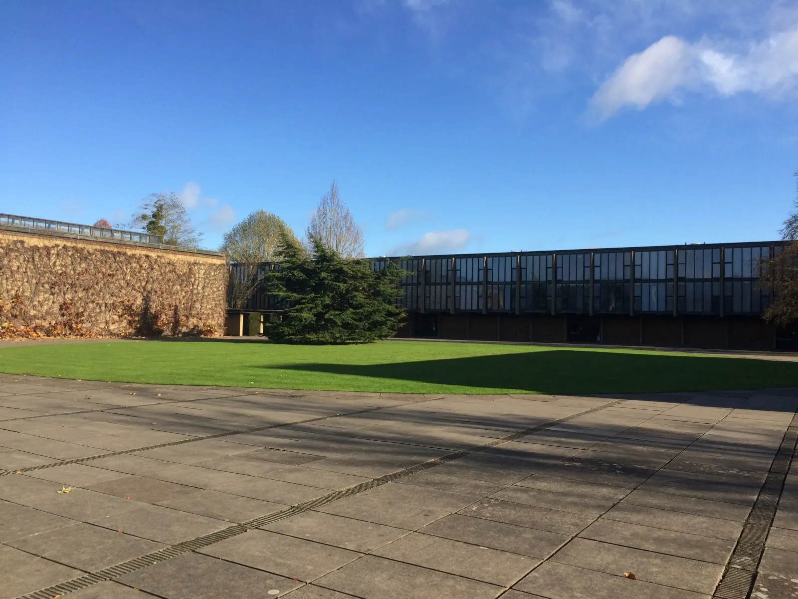
Went to a church service this morning at St. Ebbe’s, which was a beautiful little chapel with upstairs seating and stained glass windows portraying images of Christ. In honor of Remembrance Sunday, we had an Act of Remembrance to remember the soldiers who sacrificed their lives during WWI.
Had a chicken/mushroom and a steak bake (puff pastry with filling inside) for 2 pounds before heading to the social science library to do readings.
Dinner at MCR (Mature Common Room), where they have free pizza for grad students every Sunday (shhh)
Monday, November 13, 2017 – So much to do, so little time
Worked on my paper all morning in the St Catz library
Lunch: sweet chili beef (like orange chicken) with rice and snap peas + a stimulating conversation on coding
Walked in the cold air with Odelia to Weston Library, the new Bodleian library, but they don’t allow you to bring in backpacks because it contains rare books and manuscripts. We decided it was too much work to take out our laptops and stuff (and costs a pound to store bags), so we just walked around inside. It was quite fancy, with green sofas and portraits of probably high-accomplished and well-respected people.
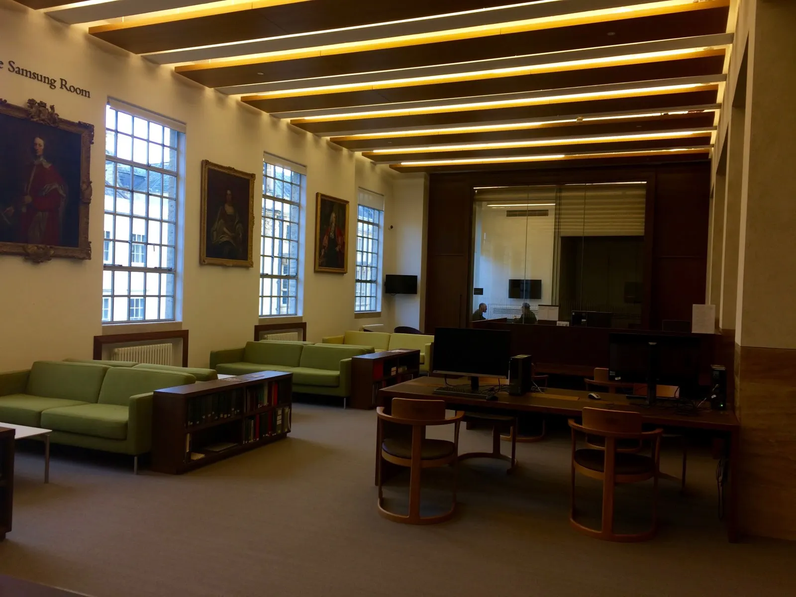
Old Bodleian Library: building surrounding a quad with Asian tourists taking photos. Went inside and walked into a dim large room with two floors filled with shelves of books lined along both walls. It smelled strongly of old books, and I thought of Harry Potter. I automatically took my phone out to take a picture, at which moment a man I hadn’t noticed earlier further down the room immediately said No Photos. So I looked around some more (and snuck in a pic from outside the door where he couldn’t see me) before going into another large reading room also lined with shelves of books:
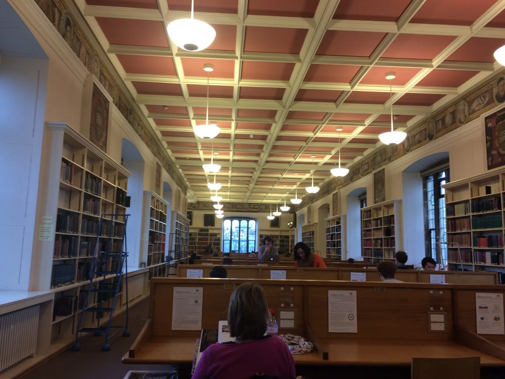
So much to see and do, so little time. I wish I could just explore rather than bury myself in front of a laptop screen. It suddenly dawned on me that it’s been 5 weeks and I’ve barely explored Oxford! I still have a whole to-do list I haven’t gotten to. What have I been doing for the past 5 weeks?? But with two papers a week, I really am in the library for entire days, though it usually comes down to me writing each paper in a day or two, one for the research portion and one to create a coherent synthesis of all the research. That’s basically what I’m doing—putting arguments from various books together in one essay. But the need to try new things is why I went to an Oxford Union debate and went rowing last week, and it’s why I signed up for a caving trip in Wales this weekend (figured this might be the only time I ever go caving in my life!).
Ran some errands: depositing money, topping up my SIM card at the Three store, buying batteries at Boots. Cornmarket Street was so lively and full of people, even on a Monday afternoon, and I loved that.
Wednesday, November 15, 2017 – A refreshed lens; the most interesting lecture yet
Turned in my essay and actually had time to proofread this time (maybe, just maybe, I am getting faster at researching and writing papers)! Walking down the street towards the Exam Schools in a sweatshirt (aka jumper), jeans, and vans, everything suddenly seemed so clear and crisp, as if turning in my essay had refreshed my outlook on the world. The weather was perfect and cloudy, not too cold. I looked around me in wonder and saw the buildings in a new light and little details that I hadn’t noticed before.
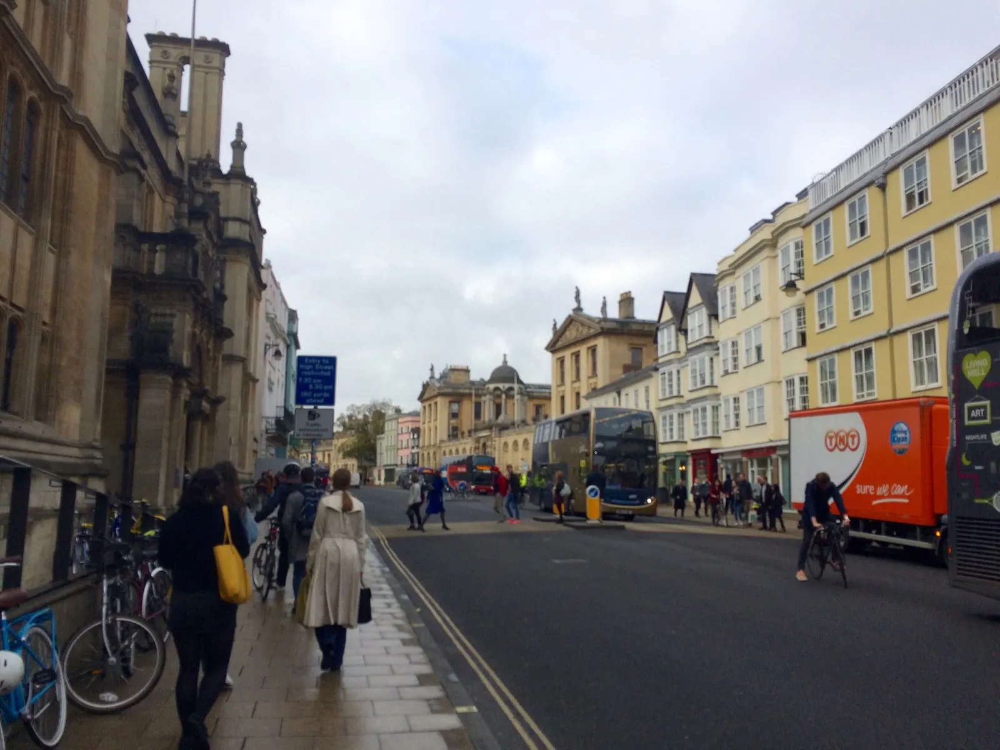
I attended the most interesting lecture I’ve listened to yet on Huntington’s Thesis (which states that the clash of the 21st century is the conflict between Western and Islamic civilizations). The professor provided a clear outline of his arguments that was easy to follow, concluding that the Thesis was flawed and ignorant. He elaborated on every point, giving me time to write all the main points down. And he covered all the counterarguments one could think of. Unlike at Wellesley, where we discuss things but often don’t come up with any real conclusion, the professors here don’t try to hide their opinions. Their lectures are more like persuasive talks rather than a spewing of neutral facts, just like what we have to do in our weekly essays. I appreciate how professors here make their opinions known and their conclusions clear. And this professor was an amazing speaker. He spoke slowly and clearly. Usually my mind starts to wander halfway into the lecture, but this time I was fully engaged for the entire 50 minutes.
Professors here seem to have more autonomy. If they can’t make a lecture, no big deal, they postpone it or find another professor or simply cancel it. And tutors only give each tutorial once a week.
It’s strange how it seems that the days go by so fast but the weeks go by slow, whereas at Wellesley the days were quite long but the weeks and months passed by so quickly. I don’t have a busy schedule here as in classes or office hours to attend, practices to go to. But there’s always more to do: essays to write, people to see, places to explore.
Had a Skype interview at 10 pm—the latest one I’ve ever done, that’s for sure. Was quite exhausted afterward and couldn’t have been happier to spend the rest of the night hanging out with Odelia. We wanted to go star gazing but as the sky was covered with clouds, not much star gazing happened. But we stayed up ’til past midnight.
Thursday, November 16, 2017 – Tutorials and sushi!
I found the topics for my tutorials this week very interesting. In International Relations, the topic was global redistributive justice—Is colonial injustice the core of the argument for global redistributive justice? We discussed reparations—who are the victims? How do you decide how much reparations to pay/in what form? Today’s Germans are not responsible for the Holocaust…there’s so much that goes into this question. But something has to be done; the victims of today are demanding compensation. Today Britain is offering humanitarian assistance to India to compensate for past colonial injustices, but is this also for Britain’s own benefit?
In Development Economics, we discussed the association between foreign aid and economic growth. How to evaluate the success of aid transfers—economic growth, social services—and how aid should be transferred—the different types and amounts—and how the success of aid transfers can be improved. We agreed there’s no universal answer—it depends on each country and its policies and institutions.
In IR, I feel like one hour isn’t enough time to discuss everything I want to discuss, whereas in the Dev Econ one I don’t have much to say and let Jan do most of the talking. I think one-on-one is better for me because it forces me to talk, and if I don’t have to talk I often don’t, which doesn’t benefit me.
After my tutorials I was sitting in the library with Alice and Robby, a student at Merton College, when all of a sudden Alice decided she wanted sushi. So we got dinner at Edamame! It was their sushi night, so they had delicious sushi at a decent price. I used to not like wasabi, but I think that’s because I didn’t mix it with soy sauce; I would just eat it plain.
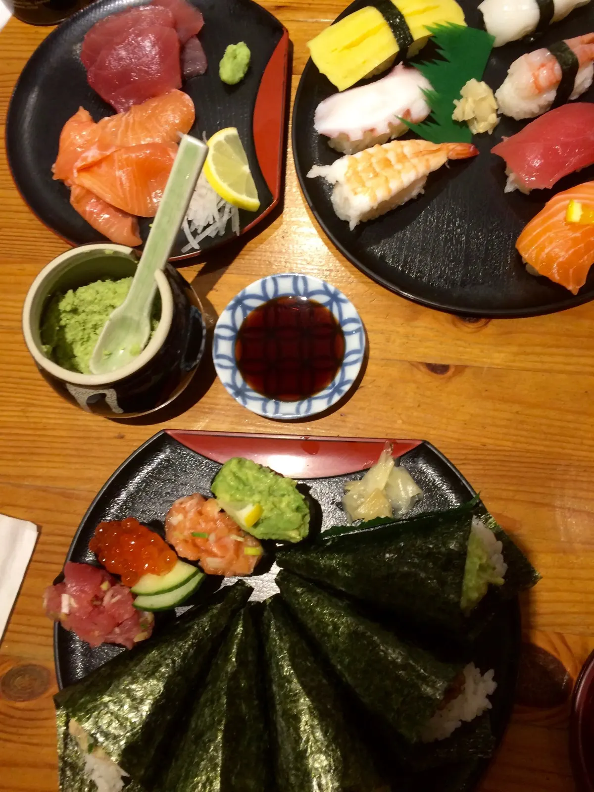
Then had a second dinner back at Catz for fish cakes and peas. We ran into Matthias and Jan and discussed the relationship between happiness and economic development, and how to define happiness. Matthias had just bought a pink polaroid camera, so we took a couple pics (2 pounds per pic; every pic counts! he joked. Which made me feel all the more honored to be in one of them). I’m always so happy after hanging out with friends. I love hanging out with people over food—it’s always been so much fun, with interesting conversations with brilliant people. I’m really going to miss these conversations.
Went to tennis practice, which reminded me how out of shape I was, but it felt so good and went by too fast.
Friday, November 17, 2017 – Oxford Christmas Market and Caving!!
Spent the morning in the library, reading up on the UN, my next topic. I was productive for the first hour (didn’t know much about the UN so was really interested in learning about it), but then kept losing focus and thinking about Blenheim Palace and other places I’d rather be in. I thought about how nice it would be if I could just read and learn about the UN without having to write an essay on it.
Lunch: typical British meal of fish and chips (a huge piece of fish, literally one fish) with peas—not surprisingly I was quite full afterwards. Sat with a group of visiting students. Our conversation today was centered on Tinder—we were analyzing how efficient it makes the dating process but criticizing how it is redefining dating with the framework of being attracted to someone based on their looks and how they present themselves, rather than how they actually are. Lol, the conversations we have. I was feeling nostalgic for these moments of laughing and talking even though I was still in them.
I heard about the Oxford Christmas Market going on this weekend and was sad I couldn’t go since I was going on a caving trip this weekend. So I went after lunch with Shayna! It was like a farmer’s market but selling tasty pastries and drinks instead of fruits and vegetables. There were tents selling hot chocolate, donuts, crepes, Tibetan tea, plum pies, olives and cheese, while Christmas music was playing and people strolled about. Christmas was in the air and we felt it. I tried Shayna’s Belgium waffle and churros and had a sample of sparkling alcoholic apple cider. Bought some Turkish delight from a lady who appeared to be Turkish—they were thick and gooey. They weren’t like the ones in Narnia but were enchantingly delicious nevertheless. We tried a rose one, licking the powdered sugar off our fingers. It tasted sweet and of roses. When I think of Oxford, I think of environments like this one, and I wish these moments would last longer.
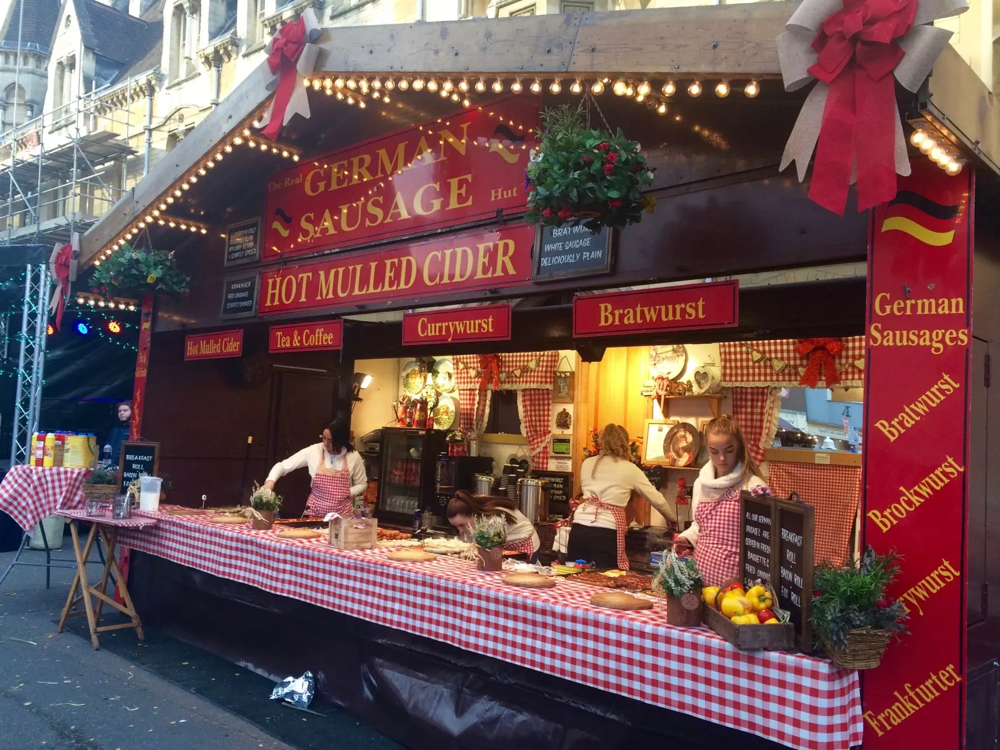
At 4:30 I packed a few clothes into my backpack and at 5 was at Iffley Sports Center, where I met the other 8 people I would be caving with, mostly grad students. I tried on an undersuit, oversuit, and wellies (boots), and at 6 we were in a van and on our way to South Wales. I got to know a couple people during the 4-hour drive.
The air was cold like winter. At 10pm we reached the South Wales Caving Hut, which was not really a hut but more like a large cabin. It was nicer than I expected—I think I was expecting something like a one-room hut.
We played a caving game called squeegee. The squeegee consisted of two slabs of wood connected with screws—we had to squeeze through it, and at each round the slabs get closer to each other, the opening narrower. The winner is the last one standing. I was out early—my sweatshirt was too big and I wasn’t willing to go to lengths to force myself through it. I immediately thought this game would never be okay in the States, but it was fine because we all knew it was just for fun, and no one was judging anyone. The guys went all out, even removing their belts to get past the slabs of wood. It was quite funny to watch, though we were basically laughing at other people struggle. I can see how the game simulates squeezing through narrow passageways in the caves??
An older man named Pete who was watching us suggested another game of trying to pick up a small object off the floor (in this case a match box) with your mouth—and both feet on the floor. The guys tried it but none of the girls. I guess guys don’t mind looking silly as much.
I later had a conversation for over an hour with Pete. I found out that he was a retired biology teacher who grew up caving in New Zealand and has been running a sheep farm for the last two years. I was fascinated and inspired by his stories of working on the farm, how brutally hard the work is but also how fun and rewarding. He told me about how he spent a whole night helping sheep give birth, how he listens to Shakespeare while driving a monotonous tractor, and how tough it is to start a farm, though he expects to be making profit within a few years. It’s hard work, I don’t always get enough sleep, but it’s a lot of fun and I really enjoy it, he said. Plus he also grows fruit trees and crops and has chickens (3-4 fresh eggs a day)!
I asked about farming in Britain vs. New Zealand, and learned that New Zealand has fewer farmers, but each farmer owns more land. I asked what he thought of pesticides: basically, he found them costly and harmful. I learned that mowing the grass keeps it growing because grass grows from the bottom, while mowing nettles, brambles, and weeds kills them naturally because they grow from the top, so there’s no need for pesticides. There are pesticides that kill everything but the grass, but then you also kill the clover that provides nitrates for the soil, he said.
I really enjoyed our conversation, though was quite sleepy by 1:30am and ready for bed.
Saturday, November 18, 2017 – Caving!! Day 1
Slept well until morning came. I woke up shivering under my sleeping bag and blanket. We ate a full English breakfast as a group: baked beans, mushrooms, scrambled eggs, toast, sausage, and bacon, with green tea.
Struggled to put on my caving gear: a fleece undersuit, stiff oversuit, wellies (boots), hard hat w/headlight, knee pads (which I wore backwards and were too loose so they kept falling down my boots and were not much help when I tripped and fell), gloves
The region of caves was called Ogof ffynnon ddu, which is Welsh for the Cave of the Black Spring.
We split up into two groups. In my group, the five of us trekked through beautiful rolling hills of tall yellow grass and up a hill, under grey skies. The whole scenery reminded me of The Hobbit. I was already tired by the time we got to the cave entrance, marked by a square metal trapdoor set into the slope of the hill.
I didn’t bring my phone so as not to risk it getting wet, so no cool pictures today. In fact, I didn’t bring anything other than my clothes and gear. We quenched our hunger on two chocolate bars and quenched our thirst at various streams in the cave, though I didn’t drink enough because it was hard to get down and sip from the ground.
From the trapdoor we climbed down into the abyss. I didn’t know what to expect, but it was quite the experience (and workout). It consisted mostly of hiking on rocks: we climbed over them, ducked under them, squeezed between them, slid down them, and held on to them for dear life. It required the entire body. A few times we had to balance on the edge of two rocks separated by a deep gap. I was not afraid of heights but could’ve easily slipped and fell through.
I was very slow and cautious and felt bad that I was slowing down the team, but the rocks were quite wet and slippery and especially after I slipped and fell when stepping down onto a rock and thought I twisted my left knee (the knee pad was not on my knee and therefore useless), was especially careful. I think my knee is okay though; it only left me with a huge bruise. I think I will improve on this next time, but I need to find the balance between not thinking, stepping where it instinctively feels right, risking a fall, and being too cautious and unnecessarily slow. Another challenge was figuring out how to scale rocks that didn’t have convenient places to place your feet: finding rock ledges you can hold on to, jumping, rotating your body, leaning against 2 neighboring boulders to scale them.
We saw many stalagmites (rising from floor of cave) and stalactites (hanging from ceiling of cave), which form when water with minerals drops from the ceiling, creating cool formations. Also saw tiny cave shrimp in the small water pools.
The air was not stuffy like I thought it would be, and the temperature was cool and temperate. I actually felt too hot at times with the thick gear I was wearing. A couple times we turned off our headlights and sat there in the pitch black—I closed my eyes and opened them and nothing changed. The nightmarish thought of our headlights breaking and being stranded in the cave, surrounded by only rock and black abyss, crossed my mind.
The one part I couldn’t stand about caving was crawling through tunnels—I started getting claustrophobic and was quite relieved to turn back when one such tunnel started getting narrower…thankfully we didn’t encounter many of these tunnels.
There were also a lot of streams to wade through—I could feel the water sloshing around in my wellies, though they did keep my feet nice and cool.
My hands were constantly muddy; there was no point in rinsing them, as most of the rocks were muddy and slimy and wet.
The joy I felt to see the light again! And come out to gray instead of black! The day seemed so bright and the wind so cold and refreshing on my face.
Showering felt so good, getting all that mud and muck off me.
Tried some gin and tonic: it tasted first like grass, then had a fruity flavor, then alcohol.
Dinner: cut onions and peppers for I think the first time, eyes stinging. I imagined my eyes corroding as sulfuric acid was forming in them.
Pasta bake for dinner: pasta with vegetables (beans, onions, courgette, etc.) and cheese. Had a whole plate and some more. Hung out and chilled with the group for the entire evening.
Caving is a great team sport—we would wait for the person behind us and give each other a leg when we needed to escalate a big rock and were out of options. It is also a great individual sport for the brave and experienced.
Sunday, November 19, 2017 – Caving—Day 2
It was a cold morning but a couple of us (who were awake) found some time before breakfast to take a short hike and explore the hills around our cave hut. The yellow grass blowed in the breeze, the green peat was soft on our feet. The sun came out just as we reached the top of a small hill and were taking pics of the beautiful scenery.
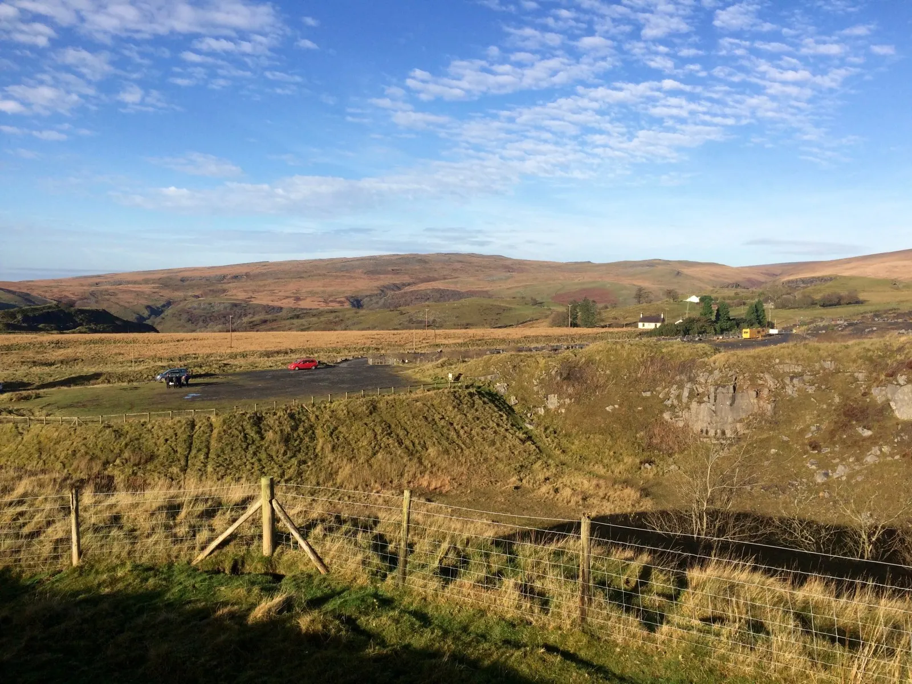
Saw some sheep far away on the slope—they looked like they would be very cute.
Today’s hike seemed shorter—but more strenuous—than yesterday’s.
It was a lot more climbing boulders, or large rocks. I used my whole body—sometimes I had to hoist myself up with my hands or slide down a rock on my bottom. A few times we had to squeeze through a narrow hole to climb down the rocks, and I would have to step down blindly and hope my feet touched a flat surface, though Nick, who was an experienced caver, usually went first so could tell me where to put my feet. I knew I was slow, but Nick made this very clear and kept telling other people we were very slow. I’m not going to lie, he said. You’re very straightforward, I told him. Some people say that’s a good thing, he replied. Depends, I said. But your climbing is surprisingly good, he admitted.
I like climbing as long as you can find places to place your feet, and it was cool scaling adjacent boulders by inching yourself up between two slabs of rock by leaning against the rock and placing your feet against the rock across from you. A few times we had to go down a steep rock with no obvious ledges or blindly descend a corkscrew (goes down and spins once around a rock).
I sweated more this time and my helmet kept shifting around my head, but it saved my head countless times when the ceiling was low.
There was much variation within the caves: sometimes the cave ceiling was so high it seemed like we were outdoors, other times I had to keep my head down to keep from bumping my head repeatedly against the rock.
We did a lot more squeezing through narrow spaces this time, a few times through a hole formed by rocks as the only pathway forward, once through a narrow canyon between two slabs of rock in which I just barely fit—a couple times I thought I might just get stuck there, and had to push and squeeze past the rock to keep from getting stuck. And it continued for a good minute, getting narrower the more we walked. Nick didn’t know when it was going to end either; I yelled are you kidding me?? But soon it ended, and I no longer felt the rock closing in from all sides. If I had been a little wider in size I don’t know if I would’ve made it through.
Waded through a few streams of muddy water but it wasn’t too bad, plus it kept my feet cool.
Nick had a waterproof camera so we did a couple photo shoots with the stalagmites
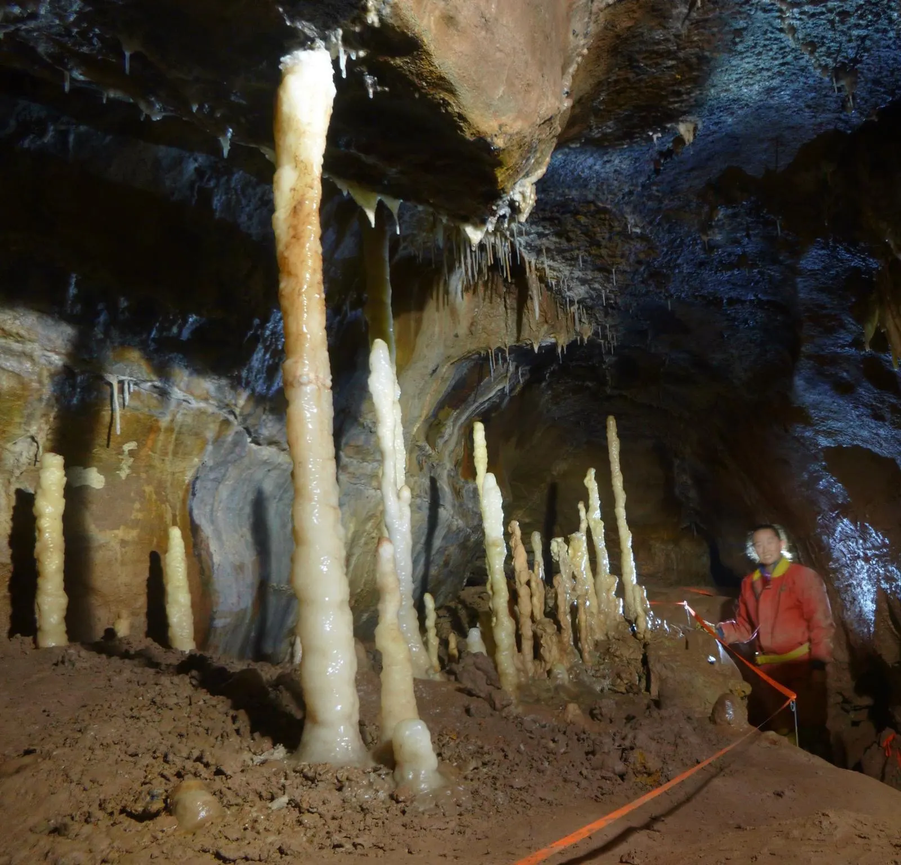
and in the midst of a vast cave that made me feel very small indeed.
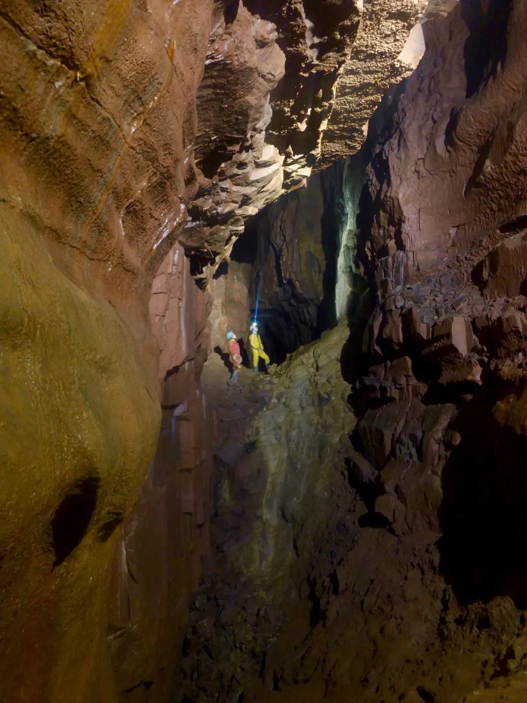
Around 3 we were back out in the green lands of The Hobbit. It was like a burden lifted to remove my helmet and smooth my wet tangled hair. My hand that had dealt with the cave elements looked pretty scary with their bumpy and scratched appearance, sort of like when you’ve gone swimming.
After showering and washing my outer suit and wellies with a hose, I found the rolling hills so beautiful that I decided to walk by myself out there one more time. The sun had gone down and the sky was covered with clouds. I looked up and the sky was white.
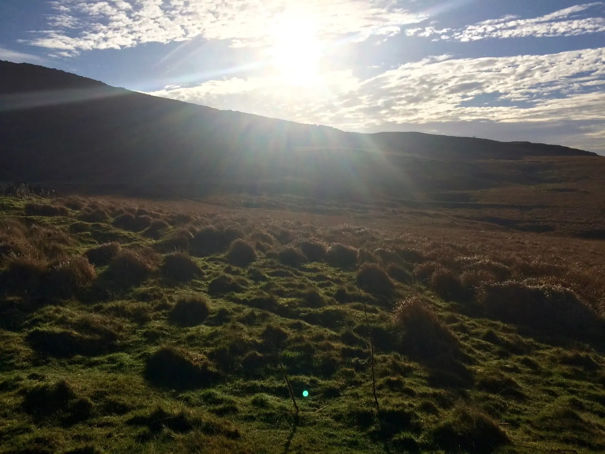
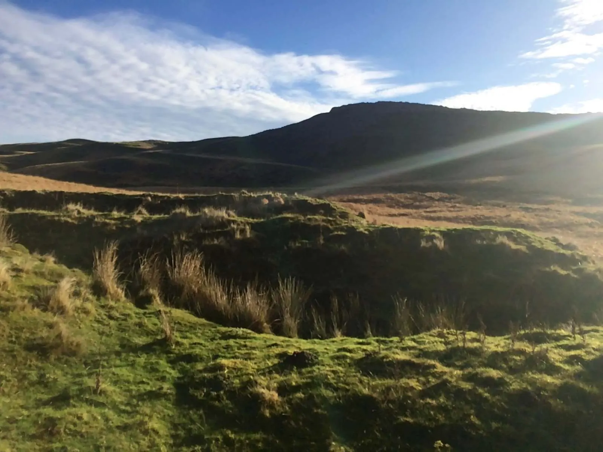
We were back at Oxford by 9pm. It’s a strange feeling to be back; I had actually forgotten about Oxford for a couple days. What a refreshing weekend, not having to think about essays or interviews for an entire weekend! Now time to get back to work, which I expect will be a bit difficult. But hopefully I’ll be refreshed and ready to get back to work, back from a dream where I met and got to know really interesting people—people that I’ll probably never see again.